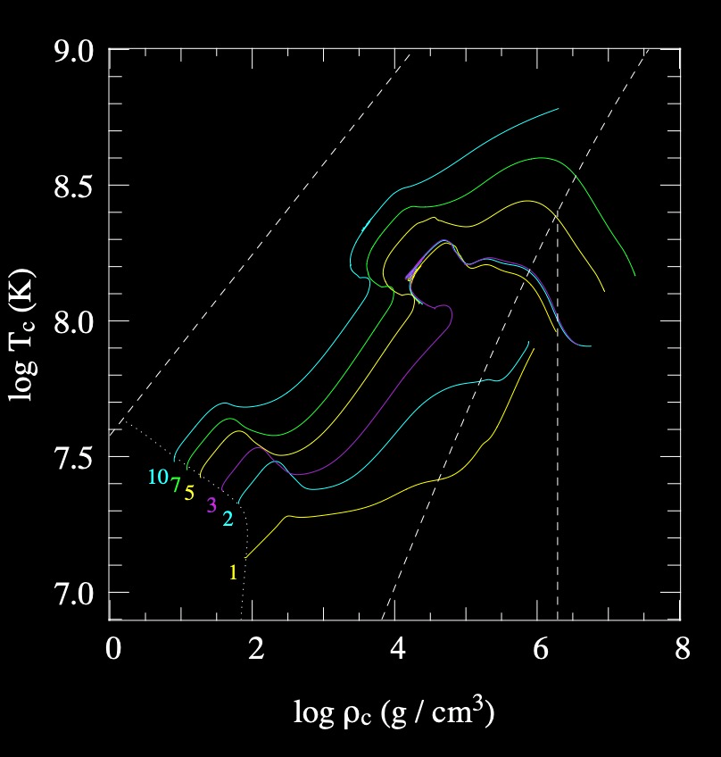
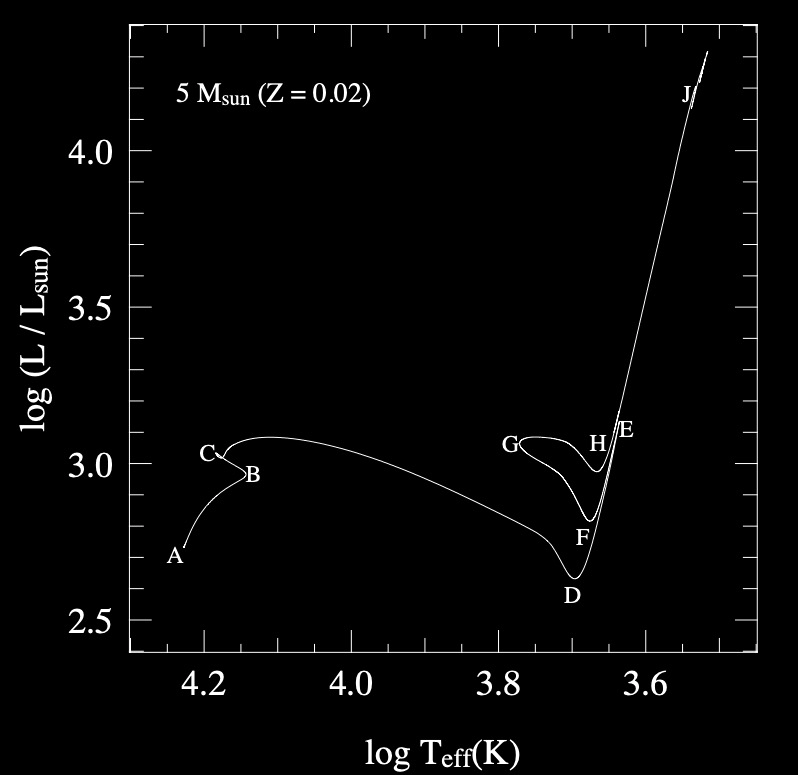

Post-Main Sequence Evolution through Helium Burning#
Notes and figures partially following Chapter 10, from Onno Pols notes.
Friday, Apr. 18, 2025
astrophysics of stars and planets - spring 2025 - university of arizona, steward observatory
Today’s Agenda#
Announcements - SCS Survey due May 7 (2m)
Reading Overview/Key Points (10m)
ICA 26 - making a CO white dwarf (30m)
Debrief + Share Results (5m)
\(\rm{The \ Sch\ddot{o}nberg-Chandrasekhar \ limit}\)#
the maximum mass of a non-fusing, isothermal core that can support an enclosing envelope.
The maximum core mass fraction can be defined \(q_{\rm{core}}=M_{\rm{core}}/M\) from which we can describe the limit as
this value is appropriate for a helium core with \(\mu_{\rm{core}}=1.3\) and a H-rich envelope.
Stars that leave the main-sequence with a helium core mass below the SC limit can therefore remain in HSE during H-shell burning. Typically this applies to stars with \(M_{\rm{ZAMS}}\lesssim 8M_{\odot}\).
Stars between \(2 M_{\odot}\) to \(8 M_{\odot}\): When the SC limit is exceeded, the helium core begins to contract, and a temperature develops in the core.
Stars \(\lesssim 2 M_{\odot}\): Can develop degenerate He cores, leading to a larger allowed core and the SC no longer applies. Electron condution helps keep the core isothermal and in HSE.
{kind=link}
Evolution tracks for stars of quasi-solar composition.
The 1 \(M_{\odot}\) model is characteristic of low-mass stars: the central core becomes degenerate soon after leaving the main sequence and helium is ignited in an unstable flash at the top of the red giant branch.
\(\textrm{The "mirror principle"}\)#
{kind=link}
{kind=link}
Radial variation of various mass shells (solid lines) in a 5 \(M_{\odot}\) (\(Z\) = 0.02) during the early post-main sequence evolution.
We can observe the “mirror principle” during thick hydrogen shell burning.
\(\textrm{The red giant branch in low-mass} \newline\) \( (\lesssim 2 M_{\odot}) \ \textrm{stars}\)#
Because the helium core in these stars have become begenerate a large density jump is developed and the envelope is quite extended. So, the structure of a low mass red-giant is essentially a function of its core mass:
Core-Mass Luminosity Relation:
The luminosity of a low-mass red giant is independent of its total mass for core masses \(M_{\rm{core}}\lesssim 0.5 M_{\odot}\)!
First dredge-up and the luminosity bump Once the convective envelope has penetrated to the location of the previously processed material of the H-core. The first dredge up can occur and lead to an increase in the C/N ratio and He surface abundances.
Once the thin H-shell has processed this material mixed by the FDU/1DU, it reaches again H-rich material and this leads to slower burning rate and reduction in luminosity.

The inset shows the temporary decrease of luminosity when the H-burning shell crosses the hydrogen discontinuity left by the first dredge-up.
Mass loss on the red giant branch As the stellar luminosity and radius is increased along the giant branch, the envelope becomes loosely bound and is becomes possible for large photon flux to remove material from the surface.
One example of a mass loss rate for stellar models based on empirical data is given by Reimers:
where \(\eta\) is a free parameter of order unity.
An example 1\(M_{\odot}\) stellar model loses about 0.3\(M_{\odot}\) of its envelope by the time it reaches the tip of the giant branch.
\(\textrm{The helium burning phase}\)#
Recall that helium burning begins when the temparature in the core has reached \(T\approx10^{8}\) K via the triple-\(\alpha\) reaction.
\(\textrm{Helium burning in intermediate-mass stars} \newline \) \( 2 M_{\odot} \lesssim M_{\rm{ZAMS}} \lesssim 8 M_{\odot} \textrm{(non-degenerate helium cores)}\)#
Core helium burning proceeds in a stable fashion, causing a large focus of energy production near the center that leads to formation of a convective core that grows with time.
Blue Loop: a stage in the life of an evolved star where it changes from a cool star to a hotter one before cooling again.
{kind=link}
E - at the tip of the giant branch, the envelope contracts. Initially, so does the luminosity while the envelope is convective - the star moves along the Hayashi line.
F - at this point, the envelope is mostly radiative and luminosity stops decreasing, the star leaves the RGB and starts the blue loop - its effective temperature increases.
G - at \(X_{\rm{center, He.}}\approx0.3\), the star reaches its minimum stellar radius and its maximum effective temperature, the envelope again begins to expand and the star cools.
H - the star has exhausted its helium in the core and the star is realigned with the Hayashi line.
The Blue Loop increases in width (extend to high \(T_{\rm{eff}}\)) for stars with \(4 M_{\odot} \lesssim M_{\rm{ZAMS}} \lesssim 12 M_{\rm{ZAMS}}\). Stars below \(4 M_{\odot}\) tend to have loops that stay close to the RGB and are not very blue after all.
\(\textrm{Helium burning in low-mass stars}\) \( M_{\rm{ZAMS}} \lesssim 2 M_{\odot} - \textrm{(degenerate helium cores)}\)#
Two main characteristics:
These stars ignite helium under degenerate conditions leading to a Helium Flash
All these stars start helium burning at nearly the same core mass of \(M_{\rm{core}}\approx 0.45 M_{\odot}\).
The helium flash
Let’s start with a \(1 M_{\odot}\) star as an example:
helium is ignited in a strongly degenerate core at \(T_{\rm{core}}\approx 10^{8} \ (K)\) and \(\rho_{\rm{core}}\approx 10^{6} \ (g \ cm^{-3})\).
the burning is unstable that is, it causes a temperature increase instead of decrease leading to thermonuclear runaway.
This is because the electron degeneracy pressure is basically independent of \(T\) so the ignition doesnt change the pressure and hence the corresponding work done in a normal stable burning event.
Therefore, the nuclear energy goes into raising the internal energy of the ions leading to an increase of the temperature, but not an increase in the density of the gas - dictacted by the degenerate electrons. The evolution of the material is therefore nearly vertically upward in the \(\rho_{c},T_{c}\) diagram.
the thermonuclear runaway leads to a main helium flash producing a local luminosity of \(l \approx 10^{10} L_{\odot}\) - similar to a small galaxy, but lasting for only a few seconds.
Stellar models suggest a series of flashes occur until the core has sufficient expanded, degeneracy is lifted and burning proceeds in a stable convective core fashion.
{kind=link}
The helium flash. Evolution with time of the surface luminosity, the He-burning luminosity and the H-burning luminosity during the onset of He burning at the tip of the RGB in a low-mass star.
The horizontal branch
Described as the location in the HR diagram for stars that have just undergone helium flash and settled into stable burning and thermodynamic equilibrium.
For a fixed helium core ignition mass, the radius and effective temperature depends on the envelope mass. T
Stars with less envelope mass at the ZAHB can be substantially hotter than those with much more of their envelope remaining.
{kind=link}
Location of the zero-age horizontal branch (think gray line) for a metallicity Z = 0.001 typical of globular clusters. These models have the same core mass (0.489 \(M_{\odot}\)) but varying total (i.e. envelope) mass, which determines their position in the H-R diagram.
{kind=link}
Globular cluster, M3, shown is an example of the horizontal branch.
In-Class Assignment 26#
In-Class Assignment 26 can be found here.